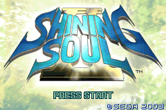

Shining Soul II (USA)
Flash 512K
Cartridge Identity
- Game Code
AU2E(FamilyAU2)- Header Title
SHININGSOUL2- Maker / Revision
EB/ rev0- ROM Size
- 16.0 MiB (16,777,216 B)
- Save Media
Flash 512K- SHA-256
b31c19d2d25683a0941d5d501912b5f21d4590cd7071fa01882e62aa5227a7c9- Engine / SDK Group
comm-011(32 families)
Screenshots


ROM Assets, Compression & Audio
- BIOS Compression
- LZ77 (
0x10): 269 streams · RLE (0x30): 0 streams - ROM Pointer Tables
- 155 tables (0 pointing to validated compressed streams)
- SDK Backup Tags
FLASH512_V131
Hardware MMIO Subsystems
ppu_display0x8000940,0x8000968,0x8000990,0x80009c0,0x80009f8,0x8000a34,0x8001394save_bus_sram_flash0x80b8048,0x80b829c
Regional Variants & Revisions (Family AU2)
- Shining Soul II (Europe) (En,Fr,De,Es,It) (
AU2P, 16 MiB) - Shining Soul II (Japan) (
AU2J, 16 MiB) - Shining Soul II (Japan) (Virtual Console) (
AU2J, 16 MiB)